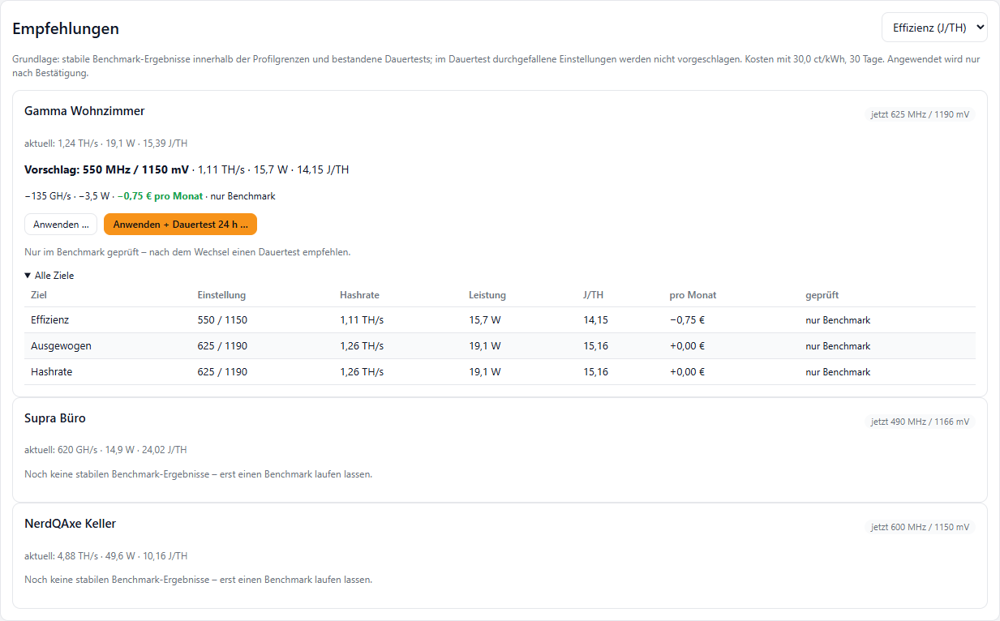
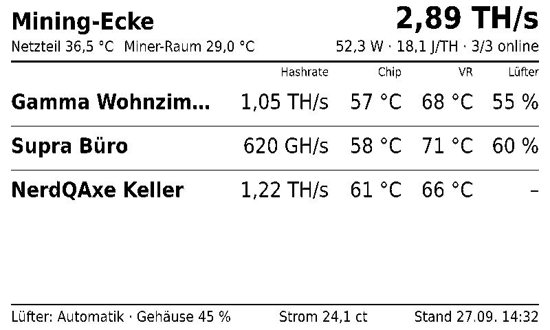
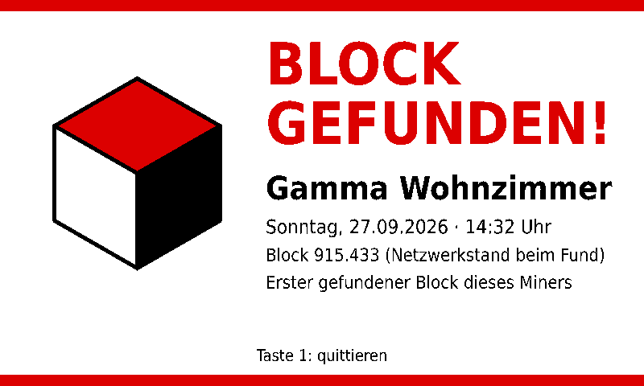
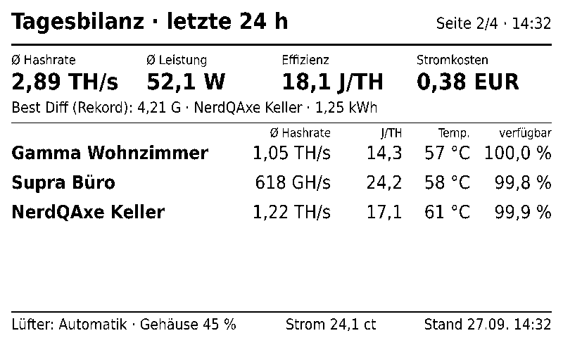
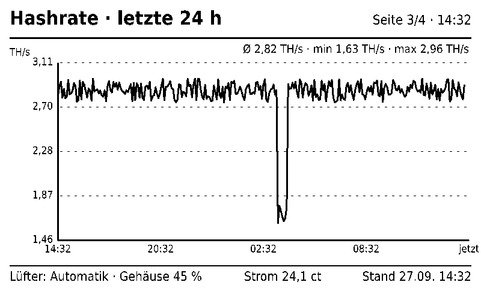
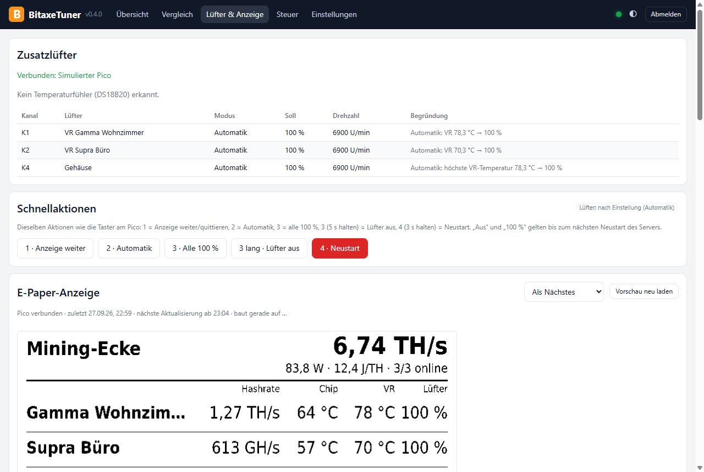

Alles, was ein Home-Miner braucht
Vom ersten Benchmark bis zum Dauerbetrieb: BitaxeTuner übernimmt das Ausprobieren und das Aufpassen – entscheiden tust du.
Automatischer Benchmark
Frequenz und Spannung Schritt für Schritt testen, jede Kombination messen und die beste Einstellung finden – für Hashrate, Effizienz oder beides.
Sicher statt schnell
Grenzwerte je Modell, Watchdog bei jedem Messwert, Abbruch bei Überhitzung. Jede Änderung nur nach Bestätigung mit altem und neuem Wert.
Rund um die Uhr
Der Server läuft auf einem Raspberry Pi, einem Windows-Rechner oder im Docker-Container – dein PC darf aus sein.
Überwachung & Push
Verlauf, Offline- und Temperatur-Alarm, Pool-Wechsel, Log-Alarme, Best-Diff-Rekorde und Tagesbericht aufs Handy.
Effizienz-Ratgeber
Zeigt je Miner die beste geprüfte Einstellung und was sie pro Monat an Strom spart – angewendet wird nur nach deiner Bestätigung.
Dauertest
Prüft eine Einstellung über Stunden – für einen oder alle Miner auf einmal – und schlägt bei Problemen eine stabilere vor.
Home Assistant
Alle Werte per MQTT mit automatischer Geräteerkennung. Frequenz und Spannung bleiben dabei tabu.
Tägliche Sicherung
Geprüfte Sicherung auf USB-Stick, Netzlaufwerk oder deinen PC. Passwörter werden nie mitgesichert.
Im Browser, auf dem Handy, am PC
Der BitaxeTuner-Server bringt eine vollständige Oberfläche mit. Die Windows-App kann sie einbetten oder alles selbst erledigen.
- Fertiges SD-Karten-Image für den Raspberry Pi – WLAN, Benutzer und deine Daten richtet die App ein
- Windows-Dienst oder Docker-Container (NAS, Home-Server)
- Passwort, Nur-Ansehen-PIN und API-Tokens; nur im Heimnetz erreichbar
- Einmaliger, geprüfter Umzug deiner Daten vom PC auf den Server – und zurück
- Updates per Klick, die alte Version bleibt als Rückfall

Zubehör: Lüfter, E-Paper, Tasten
Ein Raspberry Pi Pico für ein paar Euro macht aus dem Server eine kleine Mining-Zentrale – aufgebaut ganz ohne Löten.
- Bis zu sechs 4-Pin-PWM-Lüfter: VR-Kühlung je Miner und Gehäuselüfter, automatisch nach Temperatur
- 7,5″-E-Paper mit Übersicht, Tagesbilanz, Verlauf – und Vollbild bei Blockfund
- Vier Taster für Anzeige, Lüfter und Neustart
- Temperaturfühler z. B. am Netzteil und im Miner-Raum
- Fällt etwas aus, laufen die Lüfter automatisch mit voller Drehzahl




Lüfter und Anzeige im Griff
Kurven je Lüfter, Gehäusegruppe, Nachtbetrieb, Temperaturfühler mit eigenen Warnschwellen – und eine Vorschau jeder E-Paper-Seite direkt im Browser.

So legst du los
Alle Downloads gibt es auf der Release-Seite.
Nur mit dem PC
BitaxeTuner-Setup-….exe installieren, Miner suchen lassen, Benchmark starten. Überwacht wird, solange der PC läuft.
Raspberry Pi (24/7)
Das Image …-pi-arm64.img.xz mit dem Raspberry Pi Imager schreiben, in der App „Raspberry Pi vorbereiten“ – fertig. Pi 3, 4, 5 oder Zero 2 W.
Docker / NAS
docker compose up -d mit der mitgelieferten docker-compose.yml – dann im Browser einrichten.
⚠️ Übertakten auf eigenes Risiko. Höhere Frequenz und Spannung erhöhen Leistungsaufnahme und Temperatur und können die Hardware beschädigen. Prüfe Netzteil und Kühlung. BitaxeTuner hält sich an die Grenzen deines Geräteprofils und ändert nichts ohne deine Bestätigung.